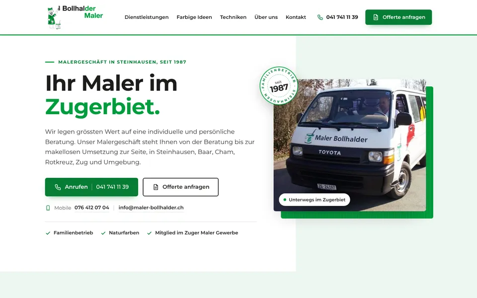
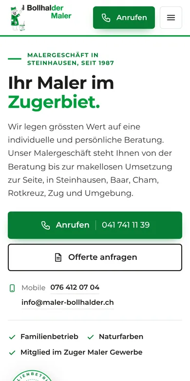

Design A
Ihr Maler im Zugerbiet
Hell, frisch und freundlich in Ihrem Grün: oben Ihr Logo mit der Malerfigur, «Ihr Maler im Zugerbiet.» und Ihr Firmenbus, darunter die sechs Dienstleistungen als Karten, die sich beim Überfahren grün füllen. Herzstück sind die «Farbigen Ideen»: Ein gezeichnetes Haus lässt sich mit Farbmustern für Fassade, Fensterläden und Tür selbst einfärben, so wie Sie es mit dem Foto eines Hauses am PC machen.
- Hell in Bollhalder-Grün
- Haus zum Einfärben
- Anfrage mit Fotos